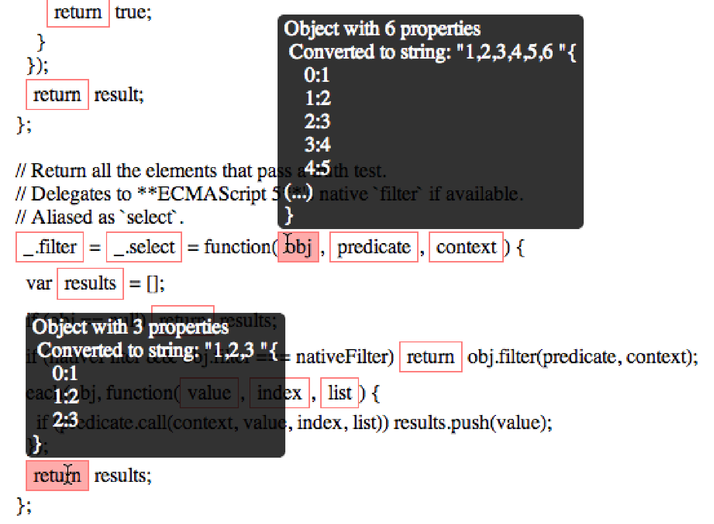

vAnnotate logs variable assignment, function calls etc during execution and then overlays the source code with the collected data.
For example the underscore.js test suite runs this code to find even numbers:
_.filter([1, 2, 3, 4, 5, 6], function(num){ return num % 2 == 0; });
When you open the test suite html file in vAnnotate this is the resulting output:
